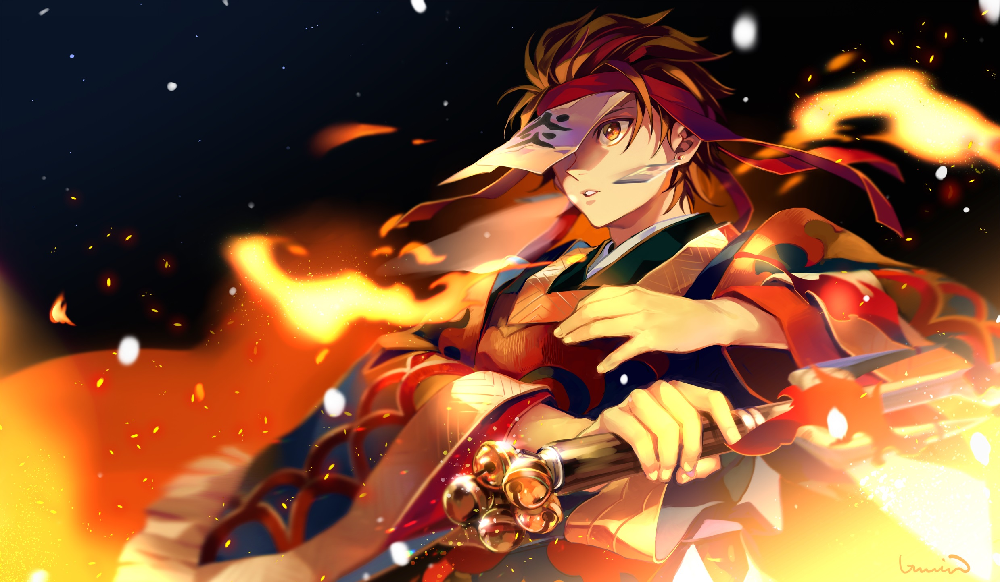

The story takes place in Taishō-era Japan, where a secret society, known as the Demon Slayer Corps, has been waging a secret war against demons for centuries. The demons are former humans who were turned into demons by Muzan injecting them with his own blood and they feed on humans and possess supernatural abilities such as super strength, powers that demons can obtain called "Blood Demon Art" and regeneration. Demons can only be killed if they're decapitated with weapons crafted from an alloy known as Sun Steel, injected with poison extracted from Wisteria flowersor exposed to sunlight. The Demon Slayers, on the other hand, are entirely human; however, they employ special breathing techniques, known as "Breathing Styles", which grant them superhuman strength and increased resistance.
Character

Tanjiro Kamado
Tanjiro is a young boy of average height with fairly tanned skin and an athletic, muscular physique. He has ruffled, black hair with burgundy tips, combed back to expose his forehead, and wide, dark red eyes with white pupils that appear lighter around the lower section of his irises. He also has a scar on the top left of his forehead, first seen when his mother brought him to watch his father perform the Hinokami Kagura dance. The scar originally looked somewhat like a graze until his fight with the Hand Demon during the Final Selection, after which it develops into a flame-like pattern as his Demon Slayer Mark. It is noted that his hands are visibly rougher for someone his age, as a result of his rigorous training under Sakonji Urokodaki.
Rengoku Kyoujurou
Kyojuro was greatly enthusiastic in regard to his duties as a Hashira, and often came across as cheerfully eccentric. He was amiable, pure of heart, and boasted extraordinary technique and swordsmanship stemming from strict practice and discipline. He was an honorable warrior who adhered to his code of morals and principles that was instilled into him by his mother at a young age—the most significant being his belief that those who were born strong have a duty to protect the weak.


Nezuko Kamado
Nezuko is a petite young girl with fair skin, visibly large, prominent fangs, and sharp, stiletto nails with a base color of light pink and ombre fading to a red-pinkish color at the end where they point. Her hair is long, black, and wavy. It reaches just below her waist, turning a flame-orange color as it passes her elbows, and appears to be crimped into large, straight ridges, worn side-swept drastically to her left. She has soft-looking, pale pink eyes that appear a lighter color around the rims of their irises, slanted downward toward the sides of her face and framed by notably long eyelashes, the pupils of which can appear slit as she transforms. In the manga, Nezuko can sometimes be shown with more than one bow. According to Tanjiro Kamado, Nezuko was known as a great beauty in their home town.
News

Mugen Train Arc

Swordsmith Village Arc
"PlayStation Family Mark," "PS5 logo" and "PS4 logo" are registered trademarks or trademarks of Sony Interactive Entertainment Inc. Epic, Epic Games, Epic Games Store, the Epic Games Store logo, and Epic Online Services are trademarks and/or registered trademarks of Epic Games. All other trademarks are the property of their respective owners.
Copyright by Phuong An